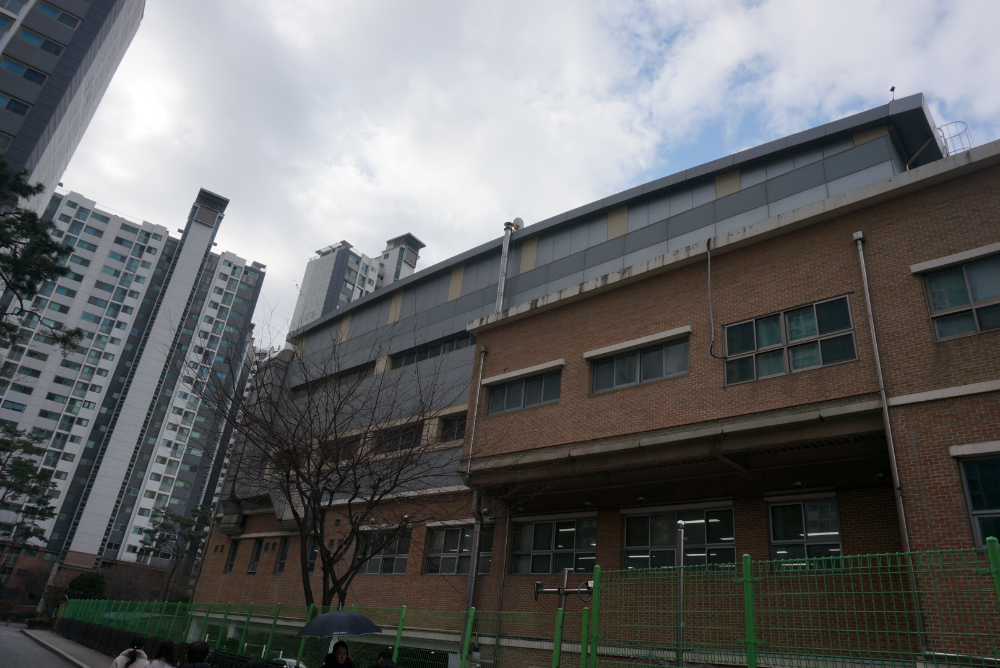
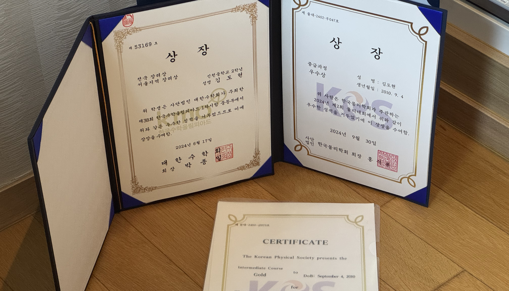
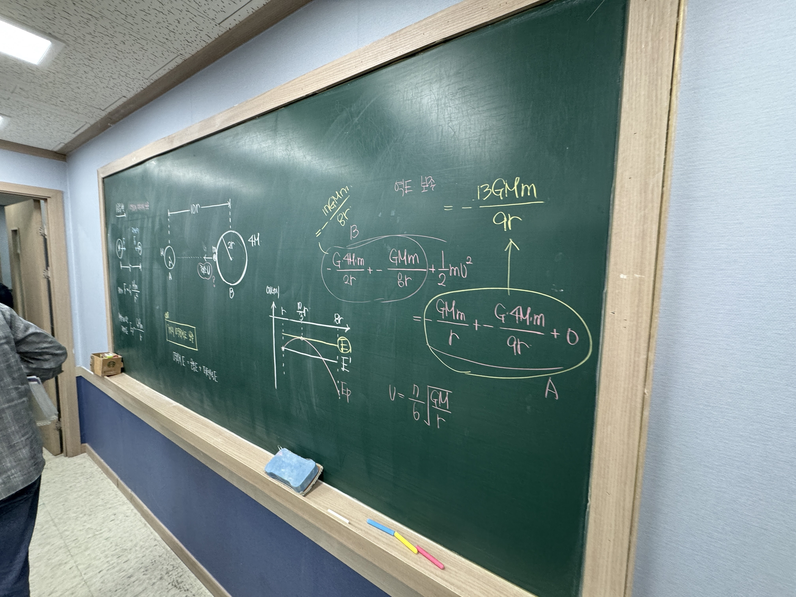
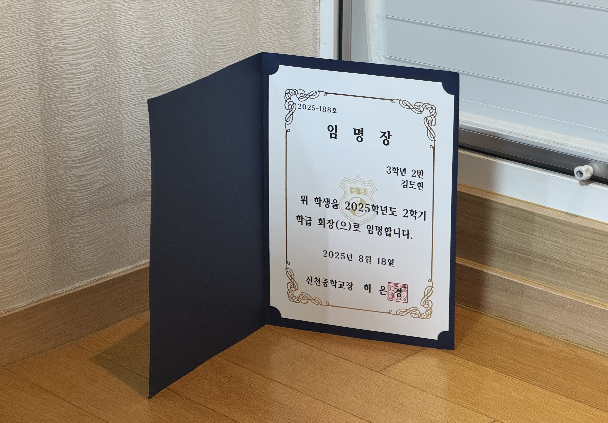
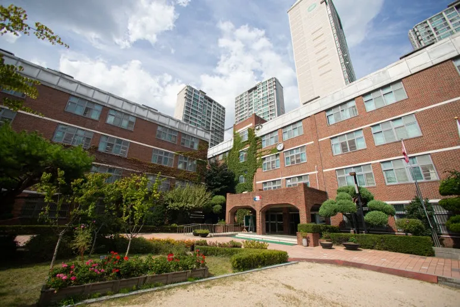
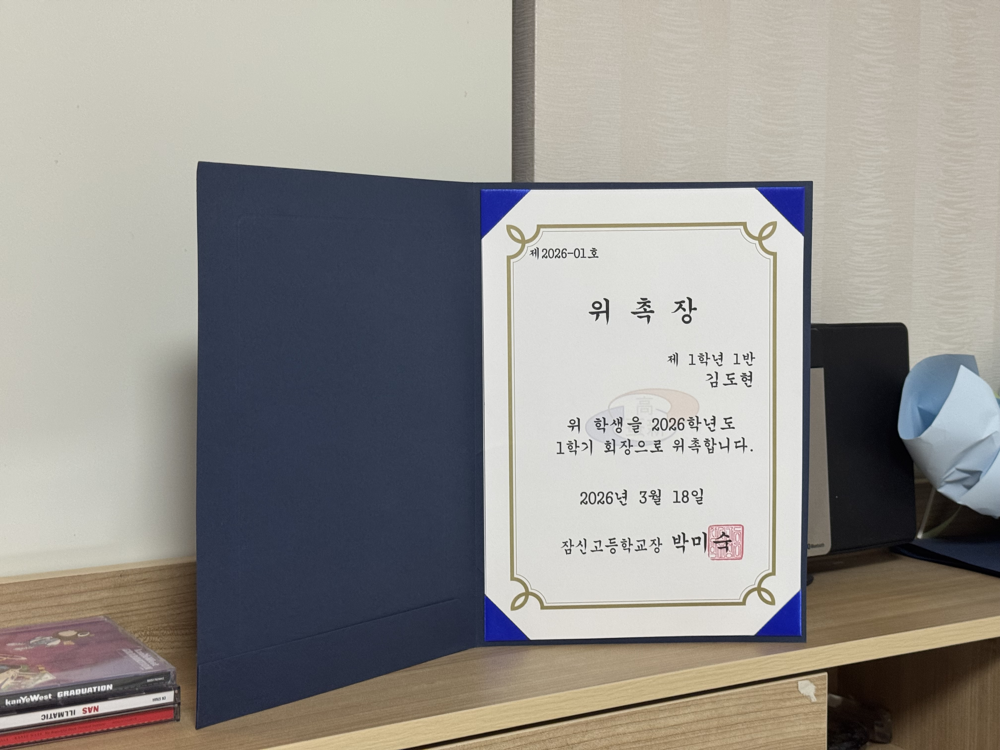

2021 - 2023
Shincheon Middle School
학업의 기초를 다졌던 중학교 시절입니다. 다양한 과목을 접하며 저의 적성을 찾고, 성실함을 바탕으로 탄탄한 학업 성취도를 유지했습니다.
School life, awards, and my passion for learning and growth

학업의 기초를 다졌던 중학교 시절입니다. 다양한 과목을 접하며 저의 적성을 찾고, 성실함을 바탕으로 탄탄한 학업 성취도를 유지했습니다.

물리 올림피아드에 도전하며 역학, 전자기학 등 심화 물리 개념을 정립했습니다. 복잡한 물리 현상을 수식으로 풀어내는 과정에서 학문적인 즐거움을 느꼈습니다.

대구과학고등학교(DSHS) 입시를 준비하며 수학과 과학에 대한 깊이 있는 탐구를 진행했습니다. 높은 벽에 도전하며 문제 해결 능력과 끈기를 배운 소중한 경험이었습니다.

중학교 시절 학급 회장으로서 급우들의 의견을 경청하고 조율하는 역할을 수행했습니다. 책임감을 바탕으로 소통하는 리더십의 기초를 닦았습니다.

현재 재학 중인 잠신고등학교에서의 생활입니다. 더 넓은 세상을 향한 학업적 열정을 이어가며, 매 순간 최선을 다해 성장하고 있습니다.

고등학교에서도 학급 회장으로 선출되어 리더십을 발휘하고 있습니다. 학급의 화합을 도모하고 선한 영향력을 끼치기 위해 노력하고 있습니다.